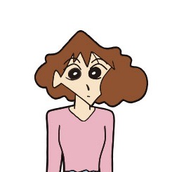
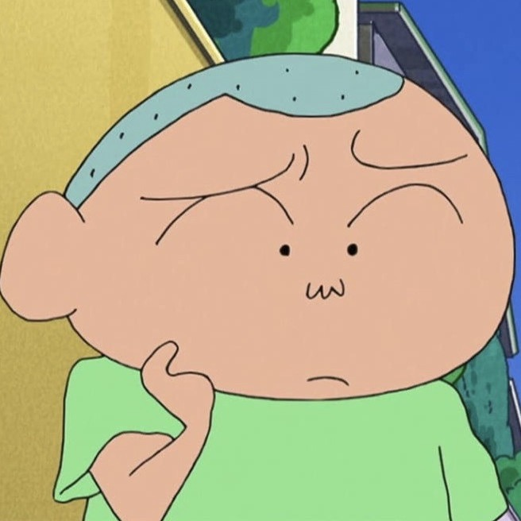
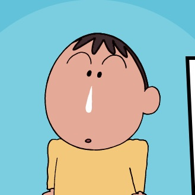
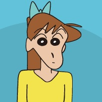

About
角色介紹
-
野原新之助
野原しんのすけ
5歲 5月5日生 暱稱「小新」
就讀雙葉幼稚園向日葵班 春日部防衛隊隊員之一
最愛的人是大原娜娜子 喜歡看動感超人
最喜歡吃的零食是巧克比 喜歡把屁屁或大象露出來
經常搭訕漂亮的大姐姐 最討厭吃青椒 -
野原廣志
野原ひろし
小新的父親 35歲 秋田縣人
雙葉商事東京本部的第一營業部股長
腳相當臭 甚至可作為武器使用。 -

野原美冴
野原みさえ
小新的母親 29歲 本姓小山 全職的家庭主婦
喜歡購買有優惠的東西
常使用「美冴拳」或用「拳頭轉轉」教訓小新和廣志
常被小新稱為「三層肥肉老太婆」 -
野原向日葵
野原ひまわり
小新的妹妹 0歲 暱稱「小葵」還不會說話
只會發出「たい」、「あ～」、「う～」
有「可惡的尿布怪獸」暱稱 -
野原小白
野原シロ
野原家飼養的小狗 雄性 毛色為白色
-
風間徹
風間 トオル
常自稱春日部防衛隊隊長 喜歡看魔法少女可愛P
但對外宣稱對卡通毫無興趣
有時很討厭小新 但實質上和他有相當穩固的友情 -

櫻田妮妮
桜田 ネネ
個性強勢
常要求春日部防衛隊隊員一起玩「超真實扮家家酒」 -

佐藤正男
佐藤 マサオ
個性膽小且很聽話
頭型像飯糰一樣 住家位置經常被小新記錯
遇到困難或較恐怖的東西 哭的第一個就是他
迷戀酢乙女愛 -

阿呆
ボーちゃん
總是流鼻涕 但是他的鼻涕非常特別
嗜好是收集各種石頭和觀察身邊周圍的東西 -
酢乙女愛
酢乙女 あい
酢乙女財團的千金大小姐 經常上很多課外活動
平常由保鑣黑磯負責接送和保護 最喜歡小新 -
高倉文太
たかくら ぶんた
幼稚園園長 樣貌異常兇狠的老好人
其住家即位於幼稚園旁 經常被小新稱為「老大」 -

石坂綠
いしざか みどり
向日葵班導師
本姓吉永 劇中的大家亦仍稱為吉永老師
常與松坂老師吵架，但其實很關心對方
春日部防衛隊經常擅自在她家舉行會議並稱之為
「春日部防衛隊的秘密基地」 -
松坂梅
まつざか うめ
玫瑰班導師
出身於鄉下地區 以前還有「種田公主」的稱號
最討厭小新叫他「阿梅」常常參加聯誼但是幾乎都失敗 -
上尾增美
上尾 ますみ
櫻花班導師
性格略顯陰暗 和黑磯先生的關係甚為曖昧 -

大原 娜娜子
大原 ななこ
受小新喜愛的年輕女大學生